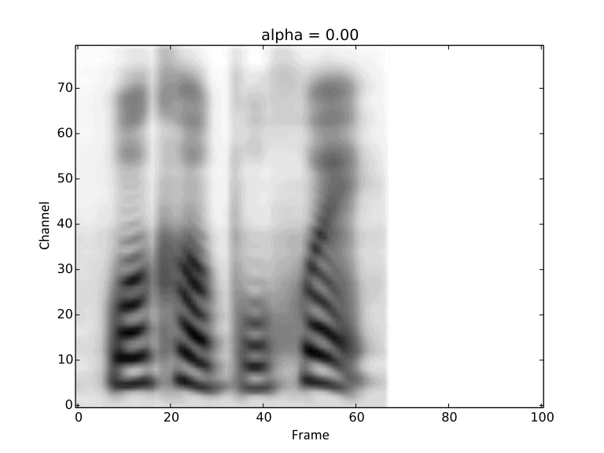
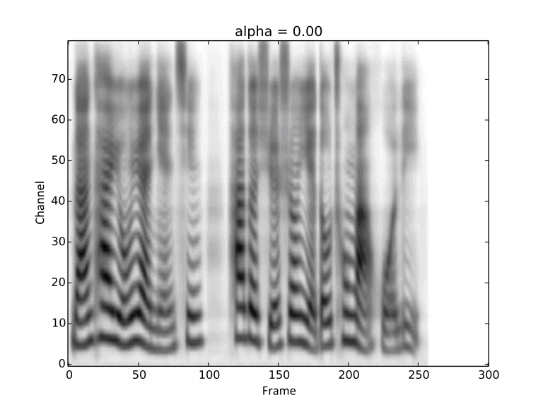
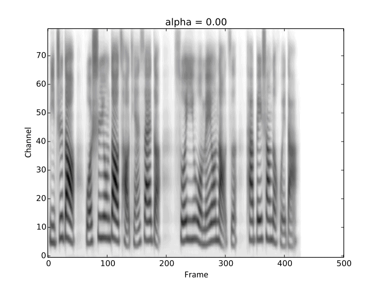

Demos for "Multi-reference Tacotron by Intercross Training for Style Disentangling,
Transfer and Control in Speech Synthesis"
Paper: Under review.
Author: Yanyao Bian, Changbin Chen, Yongguo Kang, Zhenglin Pan
Abstract
Speech style control and transfer techniques aim to enrich the diversity and expressiveness of
synthesized speech. Existing approaches model all speech styles into one representation, lacking
the abilty to control a specific speech feature independently. To address this issue, we introduce
a novel multi-reference structure to Tacotron and propose intercross training approach, which together
ensure that each sub-encoder of the multi-reference encoder independently disentangles and controls
a specific style. Experimental results show that our model is able to control and transfer desired
speech styles individually.
Introduction
Demos here are generated by WaveNet for better audio fidelity. However, the works in the paper
is irrelevant to the audio quality. When hearing the demos, the readers are recommended to
focus on the distinguishing audios with different styles.
Compare the performance of non-parallel (text contents of source and target are irrelevant) style transfer between the original model and ours (intercross).
Reference audios are randomly chosen from a same speaker. These demos are corresponding to Figure 5 in the paper.
Reference audios
Original
Intercross
Synthesized text: 正提高自己的能力，为了更好的为你解决难题。
More non-parallel style transfer cases over different speakers and different text contents.
Visualization of gradual changes in mel-spectrogram. We present GIFs of text1, text2 and text3
from left to right for intuitive view.



We reuse the reference audios of speaker1 and speaker4 in above experiments.
Then we conduct linear interpolation between them, introduced in Section 2.5 in our paper.
These demos are corresponding to Figure 6 in the paper.
We use audios from extra 20 speakers to conduct one-shot speaker conversion introduced in section 3.1.4. We see
not all of them can be converted success. We present two success cases and two failed cases here.
Reference audios
Text1
Text2
Text3
Case1 (success)
Case2 (success)
Case3 (failed)
Case4 (failed)
Text1: 我赢了所有人，但却输掉了你。
Text2: 我心里就甜滋滋的，像吃了蜜一样。
Text3: 他眼里迸射出仇恨的火花。
We conduct few-shot speaker conversion over the speaker of failed cases in one-shot speaker conversion.
We using different number of utterances to fine-tune the models and evaluate their performance.
In the experiments, we control two styles: speaker and prosody.
We define 5 prosodies by different speaking scenes: news, story, radio, poetry, call-center.
We briefly conclude their features as follows.
news: relative fast; formal.
story: many transitions and breaks.
radio: relative slow; deep and attractive voice.
poetry: slow; obeys rules of rhyming.
call-center: relative fast; sweet;
We conduct parallel multi-styles control. As table 1 in paper shows, speaker F17 and speaker M5 both have style
news and radio. Intuitively, we generates audios according to following equations.
speaker = F17 + α 1 * (M5 - F17)
prosody = Radio + α 2 * (News - Radio)
These demos are corresponding to Figure 8(a) in the paper.
We conduct non-parallel multi-styles control. As table 1 in paper shows, speaker F4 only has style call-center and speaker
M2 only has style poetry. And we are going to generate non-existent styles for the speakers.
Intuitively, we generates audios according to following equations.
speaker = M2 + α 1 * (F4 – M2)
prosody = poetry + α 2 * (callcenter - poetry)
These demos are corresponding to Figure 8(b) in the paper.